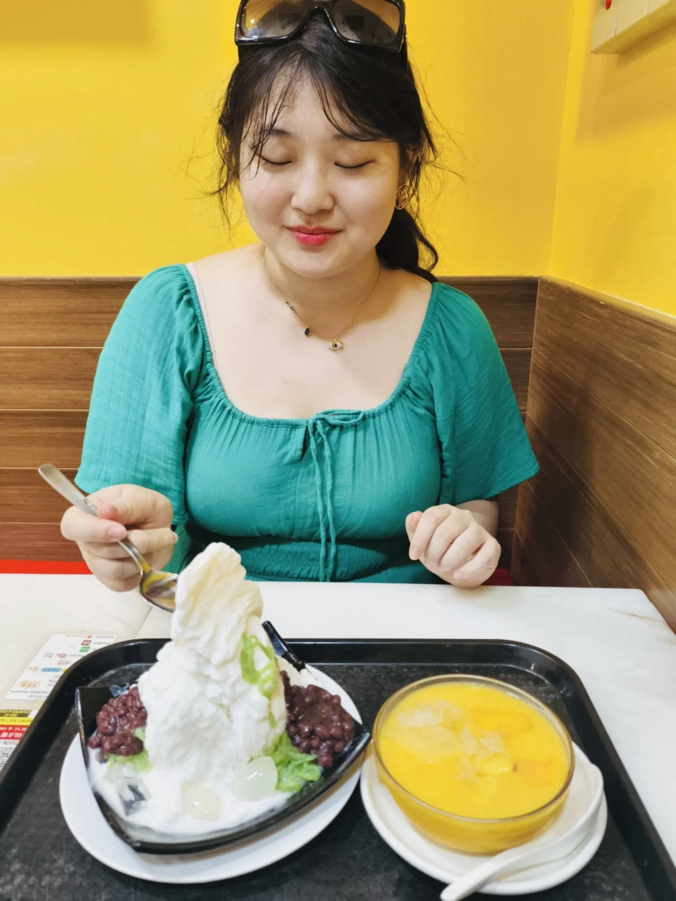

The beginning
Born and raised in Korea, telling stories long before I knew they could become a career.
Chapter One · Before the booth
It began with a cassette player, an audiobook, and a small bedroom in Korea.
The first doorway
Jesse Bernstein’s voice reading Percy Jackson and the Lightning Thief flowed from my cassette player. My mother hoped the audiobook would help me learn English. It did much more.
It connected me to a new language, distant cultures, and imagined worlds far beyond my own. The next morning, my Barbie dolls, puppets, and scraps of fabric became heroes and explorers. Blankets became kingdoms. My parents became my first audience.
I wasn’t just playing.
I was building entire universes.

Still followingChapter Two · A voice that travelled
Born and raised in Korea, telling stories long before I knew they could become a career.
A B.A. in Theatre at Northwestern University—learning how voice, body and silence can hold a room.
Performer and playwright, until a Ripley-Grier workshop opened the door to voice-over.
Translator, interpreter and English teacher—bringing people together across industries and cultures.
Back home, carrying every place, language and person I’ve met into the recording booth.
Chapter Three · Off mic
I’m always trying something new, studying the way people think, or turning last night’s dream into a story.


Little scenes from the life behind the voice.
Because every good story needs a few side quests.
Chapter Four · The professional
My curiosity may lead the way, but every performance is grounded in theatre training, disciplined preparation and a collaborative process.

Bonus chapter · Esme’s corner
My cat would like you to know she’s also accepting bookings. Her range? Mostly meows.
“I’m five. I love tuna, cheese, cardboard boxes, and ignoring your calls. My rate? One 25g can of Fancy Feast tuna per hour. Serious meows only.”
— Esme, feline voice talent*
*No other cats allowed in the booth. She has standards.Keep turning the pages